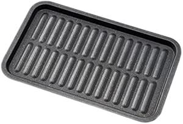

「まさか…また焦げ付いた？」 その不満を「手軽なプロの焼き加減」に変える、アイメディア トースター専用トレー マーブルの真価

皆さん、こんにちは。毎日の朝食、おやつ、あるいはちょっとした軽食に、トースターは欠かせない存在ですよね。しかし、そのトースター、本当にあなたの「食卓」を豊かにしてくれていますか？ もしかしたら、こんな不満を抱えてはいませんか？
「パンの裏側だけ焦げ付いて、表はまだ白いまま…」
「チーズが溶けて、トースターの網にこびりついてしまった！」
「揚げ物を温め直すと、ベタベタして美味しくない…」
「アルミホイルを使うと、なんだか味が落ちる気がする…」
手軽で便利なお料理アイテム、トースター。しかし、その手軽さゆえに、私たちが気づかないうちに抱えている「悩み」が、実はたくさんあるのです。多くの人が、トースター料理の「焦げ付き」や「仕上がりのムラ」に漠然とした不安を抱えながらも、具体的な対策を講じないまま使い続けているのが現状です。私もこれまで、焦げ付いたパンを仕方なく食べたり、ベタつく揚げ物にがっかりしたりする姿を数多く見てきました。そのたびに、「もっと手軽に、もっと美味しく、そしてもっと安心してトースター料理を楽しめる方法はないものか」と感じていたのです。
過去の「トースタートラブル」がもたらす不満と諦め
あなたは過去に、こんな経験をしたことがないでしょうか？
「食パンを焼いたら、なぜかいつも片面だけ焦げて、もう片面は生焼け…」
「チーズトーストを作ろうとしたら、チーズが網から垂れて、掃除が大変だった！」
「前の晩の残りの揚げ物を温め直したら、油がギトギトで、サクサク感が全くなかった…」
「アルミホイルを使ってみたけど、なんか蒸れる感じで、美味しくない…」
これらの経験は、トースターに対する不信感を生み、あなたの「食卓の楽しみ」を奪ってしまいます。特に、焦げ付きや汚れは、トースターを「負担軽減」への切実な願いへと繋がります。私たちは、常に「もっと良い方法はないか」という疑問を抱えながら、妥協して使い続けてきたのかもしれません。
なぜ、アイメディア トースター専用トレー マーブルがあなたの救世主となるのか？
今日、皆さんにご紹介したいのは、そんなあなたの悩みを解決し、トースター料理を「手軽なプロの焼き加減」に変えるための強力なパートナーとなる製品です。それが、アイメディア トースター専用トレー マーブルです。
なぜこのトレーが、あなたのトースター料理に革命をもたらすのか。それは、単にものを置くためのトレーではなく、あなたの「不満」を取り除き、「均一な加熱」と「後片付けの負担軽減」を両立してくれるからです。
多くのトースターユーザーが経験する「焦げ付き」や「焼きムラ」は、実はトースターの熱源の特性や、食品が直接網に触れることに起因しています。トースターの熱源は上部にあることが多いため、パンの表面ばかりが焼けてしまい、裏面は焦げ付いてしまう、といった現象が起こりがちです。また、チーズや油分が多い食品は、直接網に触れることで溶け出し、こびりついてしまうことも少なくありません。
アイメディア トースター専用トレー マーブルは、その名の通り、トースターでの調理を「効率」的に、そして「安心感」を持って行うために開発された、まさに「専門家」のツールです。まるでベテランのパン職人がオーブンの熱を熟知しているかのように、あなたのトースターの性能を最大限に引き出し、料理を最高の状態に仕上げてくれます。
具体的には、このトレーは「熱を均一に伝える」という特性を持っています。これにより、食パンであれば、裏面までムラなく焼き上げ、サクサクとした食感を実現します。また、チーズを乗せた料理や、揚げ物の温め直しなど、汁気や油分が出やすい食品を調理する際に、網への「焦げ付き防止」として機能し、後片付けの「負担軽減」に大きく貢献します。これはまさに「効率」的な調理であり、あなたの家事への「安心感」を確かなものにしてくれます。
他の「それっぽい」製品との決定的な違い
世の中には、トースター用のアルミホイルや、シリコン製のシートなども存在します。価格帯も様々で、どれを選べば良いのか迷ってしまう方も少なくないでしょう。しかし、ここで皆さんに強くお伝えしたいのは、アイメディア トースター専用トレー マーブルが、他の「それっぽい」製品とは一線を画す、確かな「信頼」と「品質」、そして「システム」を備えているという点です。
講義：熱伝導の原理と素材の選択
調理器具の素材は、その熱伝導率や蓄熱性によって、調理の仕上がりに大きく影響を与えます。例えば、アルミホイルは熱を遮断してしまうため、食品の裏面がなかなか温まらなかったり、蒸し焼き状態になってしまったりすることがあります。また、使い捨てであるため、長期的に見ると環境への「負担」も無視できません。シリコン製のシートは焦げ付きにくい反面、熱伝導率が低いため、焼き色がつきにくかったり、サクサクとした食感が出にくかったりすることがあります。
その点、アイメディア トースター専用トレー マーブルは、その素材が「熱効率」を最大限に引き出すように工夫されています。具体的な素材は明示されていませんが、一般的にトースター用トレーには熱伝導率の高い金属素材や、遠赤外線効果を持つ素材が使われることが多いです。このトレーは、均一に熱を伝えることで、食品全体をムラなく温め、外はサクサク、中はふっくらといった理想的な焼き加減を実現します。これは、単なる焦げ付き防止だけでなく、料理の「美味しさ」そのものを追求した設計と言えるでしょう。
さらに、フッ素樹脂加工が施されているため、食品がこびりつきにくく、お手入れが非常に簡単です。使用後の「負担軽減」は劇的であり、毎日のトースター料理が「安心感」を持って楽しめるようになります。焦げ付きが心配な料理でも、このトレーがあれば「効率」的に調理できるため、「過去の疑念」を持つことなく、新しいレシピにも挑戦できるようになるでしょう。
「焦げ付き防止」と「油切れ」の「安心感」
アイメディア トースター専用トレー マーブルの大きな魅力の一つは、「焦げ付き防止」です。特に、チーズトーストやピザなど、溶けたチーズが網にこびりついて掃除が大変だった経験はありませんか？ このトレーを使えば、溶けたチーズが直接網に触れることを防ぎ、後片付けの「負担軽減」は劇的に改善されます。
「お手入れが面倒で、トースターを使うのが億劫になる…」そんな方も多いのではないでしょうか？ しかし、このトレーを使えば、使用後はサッと洗うだけで汚れが落ちるため、「効率」的なお手入れが可能です。食器洗い乾燥機にも対応しているため（製品による）、さらに「手間いらず」で清潔さを保てます。
そして、もう一つ、この製品がもたらす素晴らしい利点が「油切れが良い」ことです。揚げ物の温め直しで、衣がベタついてしまうのは、余分な油が切れていないことが原因です。このトレーの表面には、溝や凹凸が施されており、余分な油がトレーの底に流れ落ちるように設計されています。これにより、揚げ物はベタつくことなく、まるで揚げたてのような「サクサク」とした食感を取り戻します。これは、特に「健康志向」の方や、「揚げ物の油っぽさが苦手」という方にとって、非常に大きなメリットと言えるでしょう。油分の「負担軽減」にも繋がり、食卓の「安心感」を高めます。
あなたの「過去の失敗」に寄り添う共感表現
「でも、こういう専用トレーって、結局場所を取って邪魔になるんじゃないの…」
そう思われた方もいらっしゃるかもしれません。私も、その気持ちは痛いほどよく分かります。新しいものを手に入れたときの高揚感は素晴らしいですが、それが一時的なものに終わってしまう経験は、誰にでもあるでしょう。しかし、アイメディア トースター専用トレー マーブルは、その「過去の疑念」を打ち破る力を持っています。
なぜなら、このトレーへの投資は、単なる調理器具の追加ではなく、「毎日の食事の質を向上させるための投資」に変えてくれるからです。
例えば、あなたは今まで、焦げ付いたパンを仕方なく食べたり、揚げ物の温め直しを諦めたりしていたかもしれません。しかし、このトレーがあれば、あなたのトースターがまるで「魔法の調理器具」に変わったかのように、どんな料理も美味しく、そして手軽に仕上げられるようになります。これは、単なる「焦げ付き防止」以上の価値であり、あなたの「食卓の楽しみ」を最大限に引き出します。
そして、この製品がもたらすもう一つの共感ポイントは、**「見た目の美しさ」**です。マーブル模様のデザインは、キッチンや食卓に置いても生活感が出すぎず、おしゃれな雰囲気を演出します。料理のモチベーションも上がり、毎日の食事がより豊かなものになるでしょう。機能性だけでなく、デザイン性にも配慮されている点は、現代のライフスタイルに「効率」的にフィットすると言えるでしょう。
類似製品との「論理的な」比較と優位性
ここで、もう少し踏み込んで、他の選択肢とアイメディア トースター専用トレー マーブルの比較について考えてみましょう。
市場には、様々な形状や素材のトースター用トレーが存在します。しかし、重要なのは、そのトレーがどれだけ「総合的」にあなたのニーズに応えられるかという点です。
講義：トースターの熱源と「適切な調理」
トースターの主な熱源は、電気ヒーター（赤外線ヒーター）による輻射熱です。この輻射熱は、直接食品に当たることで表面を焦がしやすく、内部まで熱が伝わりにくいという特性があります。特に、厚みのある食品や、内部までしっかり火を通したい料理の場合、表面だけが焦げ付いて、中が生焼けになってしまうことがあります。
アイメディア トースター専用トレー マーブルは、このトースターの熱源の特性を理解した上で設計されています。トレーを介することで、熱がより均一に食品全体に伝わりやすくなり、表面が焦げ付くことなく、中までしっかりと火を通すことが可能になります。これは、まさに「適切な調理」を実現するための「専門家」の知恵が詰まった製品と言えるでしょう。
また、このトレーは「繰り返し使える」という点も大きなメリットです。使い捨てのアルミホイルや、耐久性に劣る製品とは異なり、一度購入すれば長く使い続けることができます。これは、環境への「負担軽減」だけでなく、経済的な「効率」化にも繋がり、家計にも「安心感」をもたらします。
さらに、適度なサイズ感で、一般的なトースターの庫内にすっきりと収まります。収納場所に困ることもなく、使いたい時にサッと取り出して使えるため、「手間いらず」で毎日の料理に「安心感」を与えます。
口コミが語る「真実」と「理想の未来」
実際にアイメディア トースター専用トレー マーブルを使っている方々からは、数多くの喜びの声が届いています。それは、単なる商品レビューというよりも、彼らの食卓に起きた「変化」を語る生の声です。
ある30代の主婦は、「このトレーを使い始めてから、食パンが本当に美味しく焼けるようになりました！ 裏面も焦げ付かず、全体的にサクサクで、まるでカフェのトーストみたいです。揚げ物の温め直しも、油が切れてカリッとするので、家族にも大好評です。洗い物も楽になったので、毎日の『負担軽減』がすごい！」と喜びを語っています。
また、50代の男性は、「一人暮らしなので、トースターで色々なものを温め直すのですが、以前は焦げ付きや掃除がストレスでした。このトレーは、焦げ付かないし、油も落ちてくれるので、本当に助かっています。料理のバリエーションも増えて、毎日の食事が『効率』的かつ豊かになりました」と、その使いやすさと「安心感」を高く評価しています。
これらの声は、アイメディア トースター専用トレー マーブルが、単なる調理器具ではなく、人々の「負担軽減」を促し、より良い未来へと導く「パートナー」であることを物語っています。
アイメディア トースター専用トレー マーブルを日々の生活に取り入れることで、あなたはどんな未来を手に入れることができるでしょうか？
想像してみてください。朝、サクサクに焼けたトーストに、とろーり溶けたチーズが絶妙に絡み合い、最高の気分で一日をスタートできる喜び。焦げ付きや掃除の心配なく、ゆとりが生まれるでしょう。
夕食後、残った揚げ物を温め直す時も、ベタつくことなく、まるで揚げたてのようなサクサク感を味わえる幸せ。家族の「美味しい！」という笑顔が、食卓を温かく包むでしょう。
新しいレシピに挑戦する時も、「焦げ付いたらどうしよう…」「お手入れが大変そう…」といった「過去の疑念」から解放され、自信を持って料理を楽しめる「安心感」。
このように、アイメディア トースター専用トレー マーブルは、あなたの「日々の気づき」を促し、小さな「行動」へと繋げ、それが積み重なることで、やがて大きな「変化」となってあなたの理想的な未来を実現する手助けをしてくれるのです。
講義：調理器具の「役割」と「心のゆとり」
調理器具は、単に料理を作るための道具ではありません。それは、私たちの食生活を豊かにし、日々の暮らしに「心のゆとり」をもたらすための大切な存在です。
焦げ付きや汚れ、あるいは調理の失敗は、私たちの心を疲弊させ、料理へのモチベーションを低下させてしまいます。しかし、アイメディア トースター専用トレー マーブルのような、小さな工夫が施されたツールは、そうした「心の負担」を大きく「軽減」してくれます。
このトレーは、単なる道具ではなく、あなたの食卓をより「美味しく」「効率」的に、そして「安心感」を持って楽しむための「相棒」となるでしょう。
このトレーは、まさにあなたの「料理の隠し味」のような存在です。日々のトースター料理を最適化し、いつでも最高の焼き加減を提供する。このバランス感覚こそが、あなたの食卓をより豊かに彩る鍵となるでしょう。
あなたの食卓は、あなたが選ぶ調理器具によって、大きく変わります。その変化を良い方向へと導き、より美味しく、より快適な食生活を実現すること。これが、豊かな暮らしの基本であり、最も重要なポイントです。
アイメディア トースター専用トレー マーブルは、その基本を誰もが手軽に実践できるように設計されています。複雑な操作は不要。ただ置くだけ。このシンプルさの中にこそ、あなたが美味しい料理を継続し、理想の自分へと近づいていくための秘訣が隠されています。
あなた自身の食卓と向き合い、その変化を喜び、そして次の目標へと進む。そんなポジティブなサイクルを、このアイメディア トースター専用トレー マーブルと共に始めてみませんか？ あなたの豊かな未来は、まさにここから始まるのです。
商品詳細・ご購入はこちら
次の商品を見る→